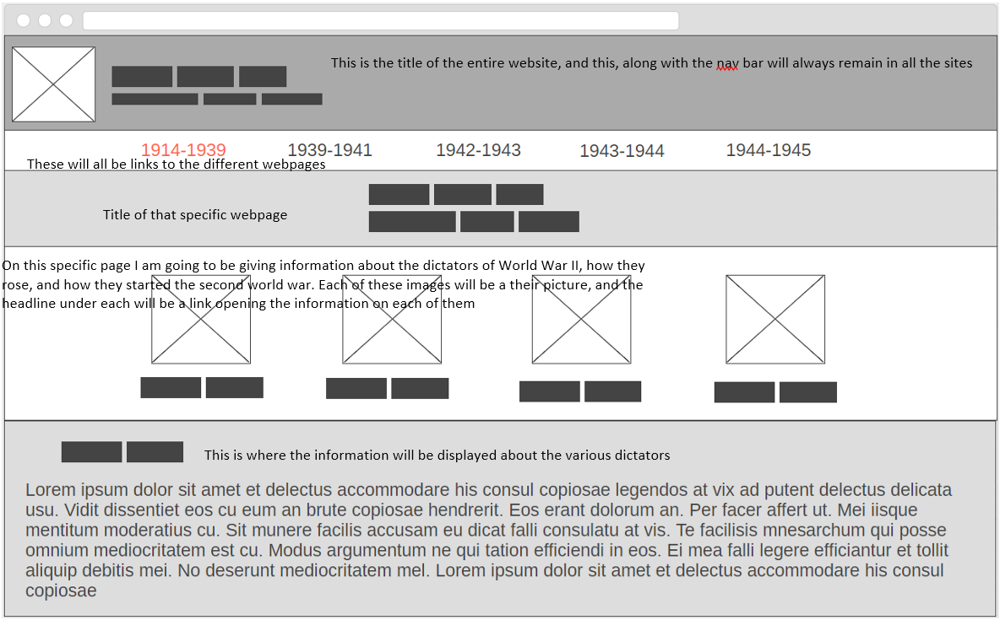
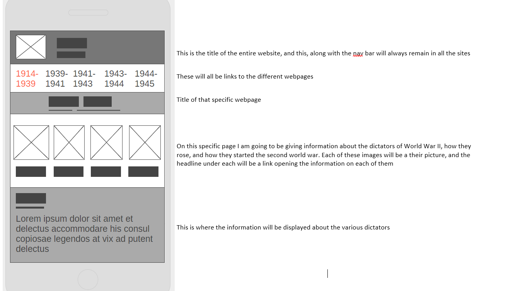
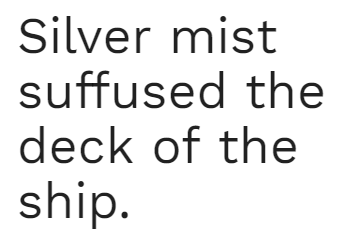

Purpose
I have always enjoyed studying the second world war, and I would like to make a site that provides some basic information about the war. Each page will describe various points of the war, and the people involved. There will be information pulled from a JSON file dealing statistics of various battles, such as when they happened, who won, and casualties dealt to both sides of the fight. The target audience would be high school students, and college students. The sites purpose will be to provide the information is a simple, and easy way to read and try to build interest on the subject.
Personas
- Name: Matthew
- Occupation: Student
- Age: 20
- Interests: Has always enjoyed history, and learning in general. He also like the outdoors and hanging with friends.
- Motivation: Matt loves to learn, but he is a busy college student, and dosen't have time to peruse the internet for hours trying to learn something that he fails his history classes have failed to teach. He wants to learn enough to satify his curiosity, but he isn't planning on writing a paper based on whay he learns.
- Enviorment: Matt far prefers to browse with his Laptop, but like most college students, his apartment isn't equipped with the best internet connection. He isn't opposed to browsing on his phone, but feels it is often slower than his laptop.
The Five Pages
First Page
The first page of of the website will contain information on how the war began, on how the various dictaors rose to power, and how these dictators lead the world to it's bloodiest war.
Second Page
The second page will contain information on the early axis victories in Europe and the Pacific, and the effect of these victories, ending with the Battle of Britain. A JSON file will be linked to this file with the specifics of the battles
Third Page
The third page will contain information on when the tide turned and the allies began to beat back the axis powers. The page will mostly focus on the battles of Stalingrad, El Aliemen, Coral Sea, Midway, and Guadalcanal. A JSON file will be linked to this file with the specifics of the battles. A JSON file will be linked to this file with the specifics of the battles
Fourth Page
This page will contain infromation about how the axis were evetually defeated, with battles such as D-Day and Okinawa being the main features. A JSON file will be linked to this file with the specifics of the battles
Fifth Page
The final page will conatin infromation on how the defeated axis were treated, and how the events of the second world war lead straight into the cold war.
Large Wireframe of the main page
Small Wireframe of the main page
Style Guide
Colors
- For the Header and the picture div: rgb(63, 124, 169)
- For the nav bar: rgb(0, 0, 0)
- For unvisited links the same color for the header will be used
- For visited links will be rgb(219, 163, 94)
- For hovering links rgb(94, 219, 98)
Font
The font that I would like to use is called Work Sans from google fonts
